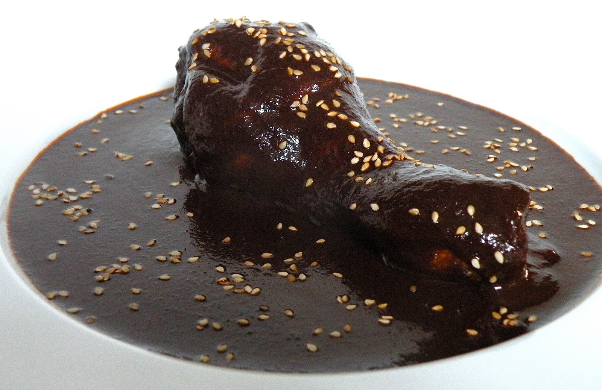
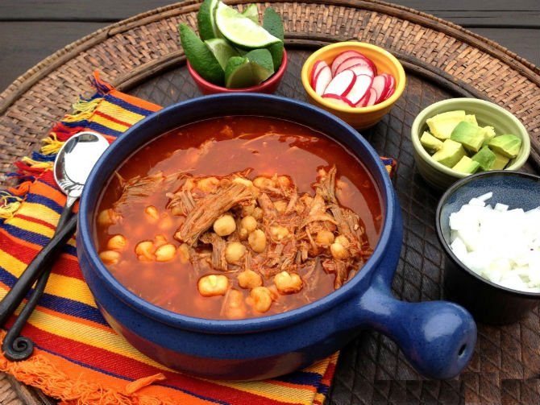

Mole negro de Oaxaca
Fecha: 20-ene-2019
INGREDIENTES
- 250 g. Chile Guajillo
- 1 kg. Chile Ancho
- 500 g. Chile Pasilla
- 2 kg. Chile Mulato
- 4 pzs. Chile Chipotle seco
- 1 kg. Ajonjolí (250 g. de ajonjolí por cada Kg. de Chile)
- 375 g. Nuez
- 250 g. Almendras
- 250 g. Cacahuate (Sin cascarilla)
- 250g. Uva Pasa
- Jitomate (por cada 250 g. de pasta se agregan 3 jitomates)
- 1 pza. Manzana Amarilla
- 1 pza. Plátano macho
- 500 g. Ajo
- Cebolla (por cada 250 g. de pasta se agregan 1 cebolla)
- c/n. Tomillo
- 2-3 rajitas. Canela
- 20 pimientas gordas.
- 20 clavos de olor.
- Chocolate (por cada 250 g. de pasta se agrega 1 tablilla de chocolate)
- Pan bolillo
- Consomé de pollo
- c/n. Sal
- c/n. Aceite vegetal
MODO DE PREPARACIÓN
- Los chiles se limpian, desvenan y doran en aceite.
- Las semillas se tuestan aparte con el ajonjolí y sal.
- Nueces, almendras, cacahuates, pasitas, manzana, platano, ajos, tomillo, canela, pimientas, clavos se doran en aceite.
- Después se lleva al molino o se muelen en metate los ingredientes anteriores para formar una pasta.
- Esa pasta se puede conservar en frascos de vidrio previamente esterilizados.
- A la pasta anterior se le agrega la cebolla, el jitomate y pan bolillo también dorado (No se le pone antes ya que aceleran el proceso de descomposición y la pasta no se podría conservar por mucho tiempo)
- Se disuelve la pasta con c/n. de consomé (caldo) de pollo y se le agrega la tablilla de chocolate.
- Suele acompañarse con una pieza de pollo cocido o guajolote (pavo)
- Se le espolvorea ajonjolí tostado
- Puede acompañarse con una guarnición de Arroz Rojo
20/01/2019 10:54
Excelente receta, muy recomendable.
Fulanita de Tal
20/01/2019 20:38
¡Que receta más complicada! Sólo para conseguir los ingredientes voy a tardar las horas. Mejor lo compro ya hecho.
Sutanita de la Otra
Pozole rojo (Estilo Jalisco)
Fecha: 18-ene-2019
INGREDIENTES
- 1 kilo de maíz pozolero precocido
- 1 cabeza de ajo Sal al gusto
- 1 kilo de carne de puerco, cortada en cubos
- 1 jitomate grande 100 gramos de chile mirasol (guajillo)
- 1/4 cucharadita de orégano
- 1 pizca de cominos
- 1 diente de ajo
MODO DE PREPARACIÓN
- Coloca el maíz en una olla grande, cubre con agua, agrega 1 cabeza de ajo y sal al gusto y cocina a fuego medio durante 2 horas.
- Después de ese tiempo, agrega la carne a la olla y cocina durante 1 hora o hasta que la carne esté bien suave. Desecha la cabeza de ajo.
- Mientras, hierve el jitomate hasta que se haya ablandado. Remoja los chiles en agua caliente hasta que estén suaves, quítales las semillas y el rabo y muélelos junto con el jitomate, sal, orégano, cominos y 1 diente de ajo. Cuela.
- Cuando ya está suave la carne, sácala de la olla y deshébrala.
- Vierte la salsa roja dentro de la olla con el maíz y deja que suelte el hervor. Regresa la carne deshebrada a la olla, rectifica la sazón y deja que hierva unos minutos más antes de servir.
- Sirve con lechuga picada, cebolla picada y unas gotas de jugo de limón. Acompaña con tostadas.
19/01/2019 22:47
Nunca pense que fuera tan fácil hacer el pozole que tanto me gusta.
Perenganita de Cual
20/01/2019 02:12
¿Saben realmente que es lo que están comiendo? Con un plato de eso aumento de peso con solo mirarlo.
Jane Doe